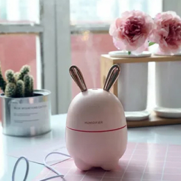
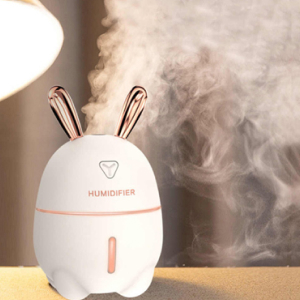
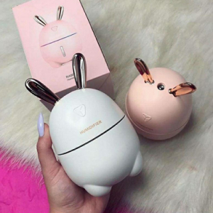
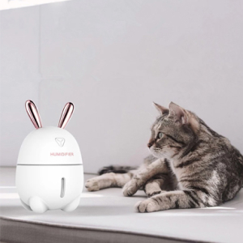
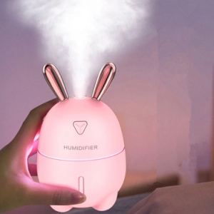

<section class="info__section">
	<div class="container">
		<div class="info__wrapper">
			
			<h3 class="info__section-title">
				УВЛАЖНИТЕЛЬ HUMIDIFIER - ЭТО
				СОВРЕМЕННОЕ РЕШЕНИЕ УВЛАЖНЕНИЯ ВОЗДУХА В ВАШЕМ ДОМЕ
			</h3>
			
			<div class="info__block">
				<div class="info__block-item info__block-1">
					
					<p class="info__block-text">
						<span>Увлажнитель воздуха</span> - этот прибор, не только сделает воздух более влажным, комфортным и безопасным, устранив бактерии и пыль, но и станет настоящим украшением в Вашем доме, офисе и машине.
					</p>
				</div>
				<div class="info__block-item info__block-2">
					
					<p class="info__block-text">
						<span>HUMIDIFIER</span> необходим в доме где есть маленькие дети. Этот увлажнитель несомненно очень понравится им, ведь он выполнен в виде симпатичного кролика. Ребенок точно будет в восторге, ведь устройство имеет светодиодную подсветку и её можно использовать в виде ночника
					</p>
				</div>
				<div class="info__block-item info__block-3">
					
					<p class="info__block-text">
						<span>Наш увлажнитель</span> невероятно прост в использовании: достаточно налить необходимое количество воды в резервуар и нажать на кнопку. Работает как от сети, так и от USB-кабеля, power bank, ноутбука, или даже прикуривателя в автомобиле
					</p>
				</div>
				<div class="info__block-item info__block-4">
					
					<p class="info__block-text">
						В машине <span>он будет увлажнять воздух</span> в салоне а, при добавлении эфирных масел, может использоваться для ароматерапии. Главный плюс такой ароматизации, то что она натуральна и полезна для нашего организма. 
					</p>
				</div>
				<div class="info__block-item info__block-5">
					
					<p class="info__block-text">
						В период болезни детей, им нужен влажный и чистый воздух - <span>увлажнитель вам поможет</span> в этом - поставьте увлажнитель на тумбочку возле кроватки ребёнка или в изголовье.
					</p>
				</div>
			</div>	
		</div>
	</div>
</section>
